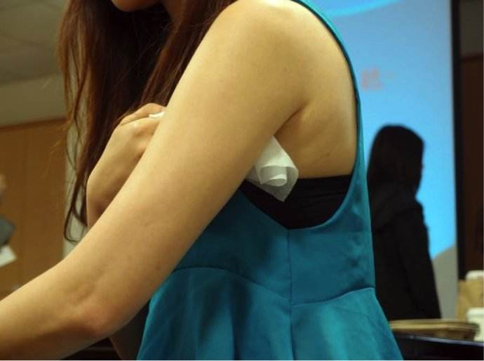

早期狐臭疾病没有什么明显的症状，等发现自己患病了，就有可能会盲目的进行治疗。那么大家在治疗这种疾病之前，大家要怎么鉴别这种疾病呢?下面就为大家详细的介绍一下狐臭的鉴别方法是什么呢?
首先，对于怎样鉴别狐臭，首先要考虑到患者是否有狐臭家族史。专家介绍，狐臭有一定的家族遗传性，如果自己的家人有患过狐臭的，自己换狐臭的可能性也会很大。这种遗传性虽然并没有性别差异，但是临床上女性患者要多于男性。

其次，怎样鉴别狐臭还可以葱花患者身上的气味来进行诊断。难闻的气味是狐臭最典型的特点，因此可以在患者运动过后，拿一块干净的布在腋下擦拭一下，闻闻是否有异味，如果有的话，很可能患有狐臭。而过多的出汗还会把患者腋下部位的衣服染黄，给患者造成清洁上的困扰。
第三，狐臭的鉴别也可以从患者的耳朵着手。临床上，狐臭患者都会有油耳朵现象，他们的耳屎会很粘稠，症状较轻的呈粉末状。但并不是有油耳朵现象就是患有狐臭，这只是诊断狐臭的一种方法。
第四，狐臭的鉴别还可以观察患者的腋下是否有异常的油腻物，是否出现毛发霉变分泌物粘连的症状。
相信大家对狐臭的鉴别方法一定有所了解了。只有早日发现疾病，及时进行有效的治疗，患者才能够早日的恢复身体健康。